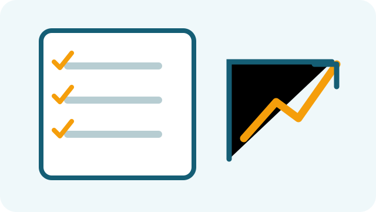

Define the problem
Write one sentence describing the customer problem you want to solve.
STARTUP RESOURCES
A simple plan helps you test assumptions, control spending, and learn from your first customers.
A SIMPLE FRAMEWORK
Write one sentence describing the customer problem you want to solve.
Ask potential customers about their current solution, frustrations, and buying habits.
Create the simplest useful version of your product or service.
Record sales, direct costs, operating costs, and customer feedback.
Use evidence from customers and your numbers to decide what to change next.

Use a simple checklist to make your assumptions visible before increasing your spending.
Small, measurable improvements can help you make better decisions over time.
QUICK TOOL
Answer the questions below. Your result is saved locally in this browser so you can return to it later.
A good plan reduces avoidable mistakes, but customers and markets can change. Treat your first version as a learning process.